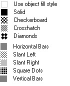

Purpose
| Opcode format | Opcode | Operand Format | Comments |
| Extended ASCII | (FillPattern | <ws>id
[<ws>(FillPatternScale<ws><FScale>[<ws>])]\ |
id is based on the following mapping. |
id is based on the following mapping:id value = 0 correspond to 'Illegal' fill pattern
id value = 1 correspond to 'solid' fill pattern
id value = 2 correspond to 'Checkerboard' fill pattern
id value = 3 correspond to 'Crosshatch' fill pattern
id value = 4 correspond to 'Diamonds' fill pattern
id value = 5 correspond to 'Horizontal_Bars' fill pattern
id value = 6 correspond to 'Slant_Left' fill pattern
id value = 7 correspond to 'Slant_Right' fill pattern
id value = 8 correspond to 'Square_Dots' fill pattern
id value = 9 correspond to 'Vertical_Bars' fill pattern
id value = 10 correspond to 'User_Defined' fill pattern Figure 1. Available fill patterns
Details
Set Fill Pattern supports scaling as an opcode option for storing a double value similar to the way that the Set Line Style opcode supports pattern scale. The Fill Pattern Scale opcode specifies the scale factor (multiplier) for the fill pattern.
The fill pattern scale setting, in the ePlot driver, is the pattern scale from the General page of the Plot Style Table Editor. This is a simple multiplier of the standard fill pattern size. When this is 1.0, plot style fill patterns plot so that the spacing between pattern elements is approximately 1/10 inch on the plotted page. For example, if the pattern scale is 2.0 this should become 2/10th inch on the plotted page; or, if the scale is 0.5 then the spacing between elements should be 1/20th inch.
Fill pattern of 'Solid' is the default.